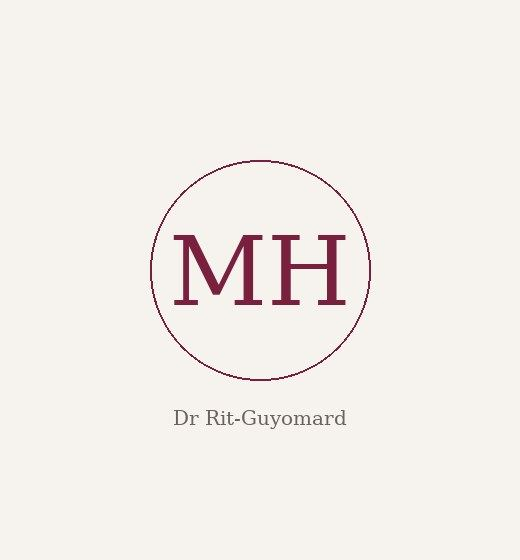

Notre équipe
Deux orthodontistes à votre écoute
Une équipe de spécialistes qui accompagne enfants, adolescents et adultes avec écoute et bienveillance.

Dr Jessica Marciano
Orthodontiste
Le Dr Jessica Marciano accompagne chaque patient, enfant, adolescent ou adulte, avec écoute, pédagogie et bienveillance. Son objectif : proposer un traitement adapté à chacun, dans le respect des dernières techniques et avec un souci constant du confort et de la transparence.

Dr Marie-Hélène Rit-Guyomard
Orthodontiste
Le Dr Marie-Hélène Rit-Guyomard exerce l'orthodontie au sein du cabinet et prend en charge les patients de tous âges. Elle met son expérience au service d'un suivi rigoureux et attentif, pour des traitements efficaces et confortables.
Nous contacter